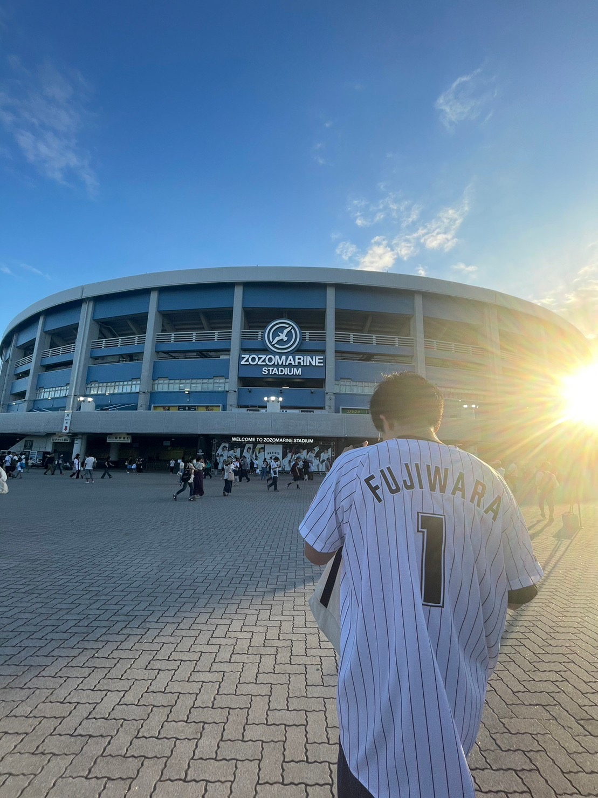

こんにちは、[住山智基]です。
[日本大学大学院 理工学研究科 電子工学専攻 大谷研究室 修士1年]
私について

私の研究は、テラヘルツ波を用いた高精度光学湿度計測の実現です。テラヘルツ帯の水蒸気吸収のスペクトル解析しています。
常に新しい技術やデザインのトレンドを学び、自身のスキルセットを広げることに喜びを感じます。趣味はプロ野球スピリッツAと野球観戦、旅行先でのグルメを食べることです。
研究内容
背景
湿度は身近な物理量であり、感染症対策や電池製造、医薬品の品質管理など、さまざまな分野で重要視されています。しかし、市販の湿度計は精度が±5%、精度の良いものでも±2%ほどであり、特に低湿度環境では誤差が大きくなるという課題があります。
目的
既存の湿度計よりも一桁以上精度のよい光学湿度計測の実現に向け、テラヘルツ分光法により水蒸気吸収スペクトルの測定を行っています。昨年度の成果では、絶対湿度0.6[g/m3]のときに相対誤差1%以下で測定することに成功しました。今後の目標は、他の湿度帯でも同様の結果を得ることです。
関連活動
- 日本大学電子線利用施設LABRAユーザーミーティングでのポスター発表
スキル
HTML5
CSS3
JavaScript
React
Figma
Python
制作実績


お問い合わせ
ご興味を持っていただけましたら、お気軽にご連絡ください。